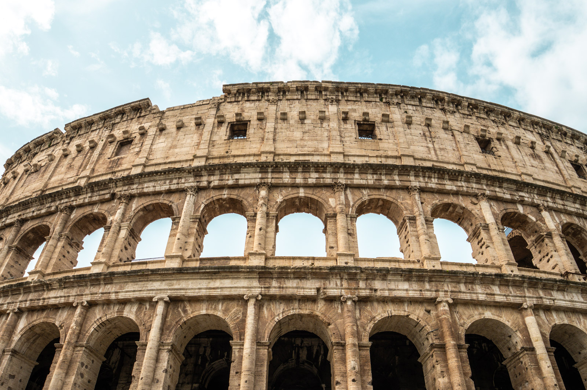
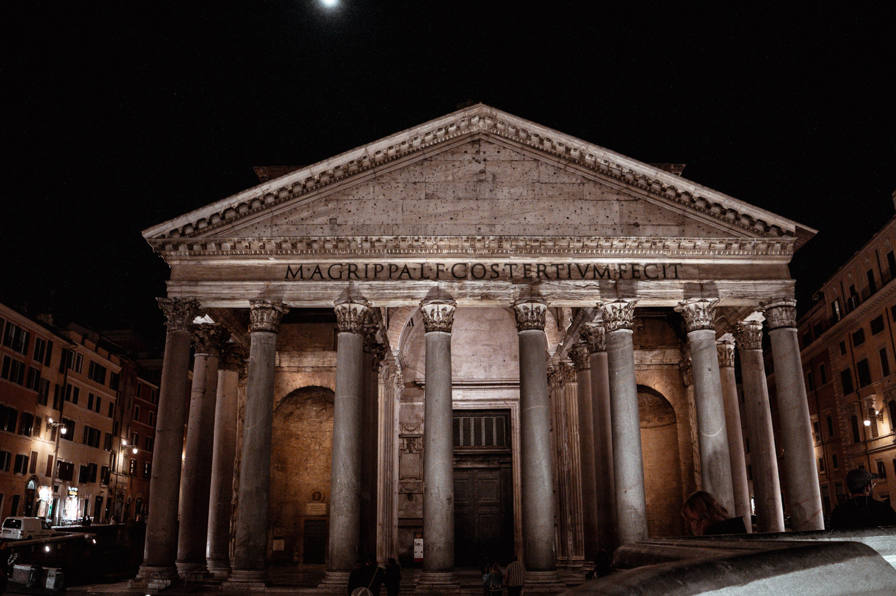
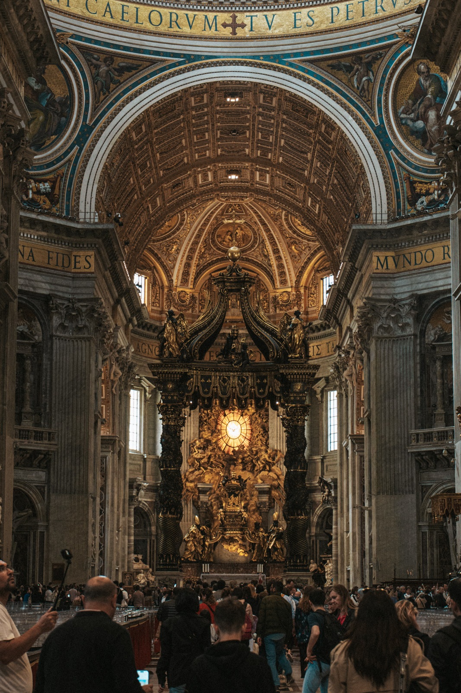
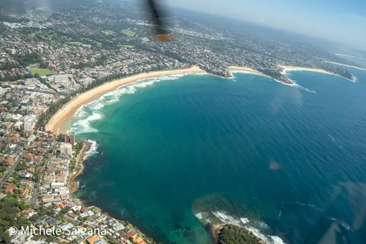
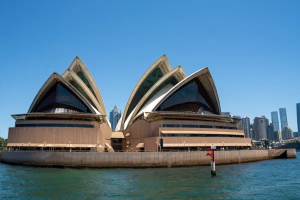
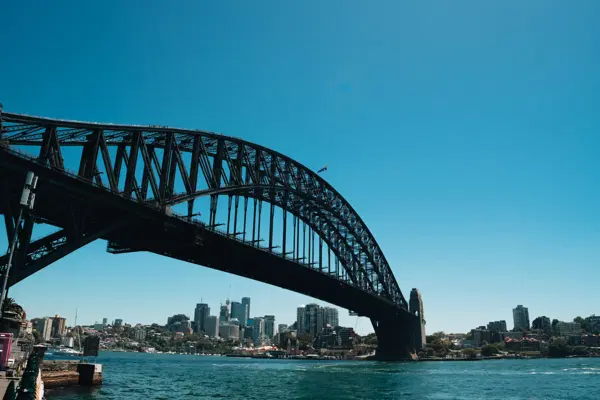
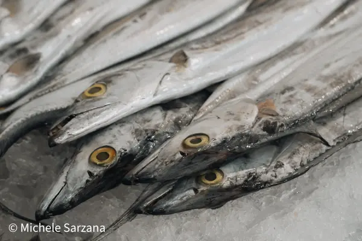
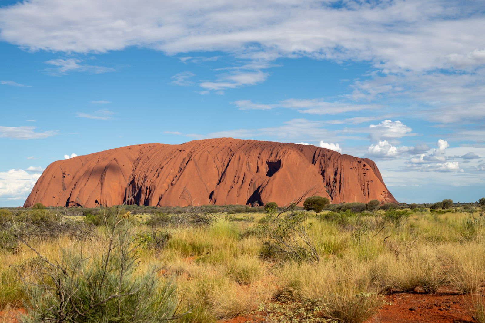

Prima di partire
Un viaggio fotografico inizia a casa. Non per programmare ogni scatto, ma per sapere cosa cercare e non perdere tempo sul posto.
- Guarda le foto degli altri, poi mettile da parte. Ti servono per conoscere i luoghi, non per rifarle uguali.
- Segna orari di alba e tramonto e la direzione del sole sui luoghi principali.
- Informati sulle regole. Musei, luoghi di culto e siti naturali hanno spesso divieti su treppiedi, droni e flash.
- Porta poco. Un corpo, uno zoom versatile, un obiettivo luminoso piccolo. Il resto pesa e resta in albergo.
Un viaggio non è una lista di luoghi da fotografare. È un racconto da costruire.
Oltre la cartolina
Davanti ai luoghi famosi tutti scattano la stessa foto, dallo stesso punto, alla stessa ora. Falla anche tu: è un bel ricordo. Poi cerca la tua.

- Cambia ora. All'alba i luoghi famosi sono quasi vuoti e la luce è migliore.
- Cambia distanza. Un dettaglio della pietra, una persona che guarda il monumento.
- Gira le spalle. A volte la foto migliore è dietro di te, nella gente che guarda.


Raccontare un luogo
Il cinema racconta con campi diversi: il campo lungo per orientare, il campo medio per agire, il dettaglio per emozionare. Funziona anche per un racconto di viaggio.
| Campo | Cosa mostra | Esempio |
|---|---|---|
| Lungo | Dove siamo | Una città dall'alto, una valle |
| Medio | Cosa succede | Una piazza, un mercato, una strada |
| Dettaglio | Com'è fatto | Una mano, un cibo, una texture |




Ogni giorno chiediti se hai almeno una foto per ogni campo. Se manca il dettaglio, il racconto è freddo. Se manca il campo lungo, non si capisce dove siamo.
Persone, cibo, rituali
I luoghi diventano vivi con chi li abita. Mercati, cucine, feste, mestieri. Sono i soggetti più ricchi e quelli che chiedono più rispetto.
- Chiedi. Con un gesto, un sorriso, due parole nella lingua locale. In molti paesi è indispensabile.
- Rispetta i divieti nei luoghi sacri e nelle cerimonie. Alcune non si fotografano.
- Il cibo si fotografa meglio con luce laterale da una finestra, dall'alto o a 45 gradi.
- Compra, mangia, parla. Il fotografo che diventa cliente ottiene foto migliori del fotografo turista.
Luoghi naturali lontani
Deserti, coste, foreste tropicali. Luce, distanze e clima sono diversi da quelli di casa.

- Vicino all'equatore il sole sale e scende in fretta. La luce buona dura poco.
- Sabbia e salsedine sono nemiche dell'attrezzatura. Cambia obiettivo al riparo e pulisci ogni sera.
- Rispetta i luoghi sacri. Alcune parti di Uluru, per esempio, non si possono fotografare per rispetto della cultura aborigena. I cartelli lo indicano.
Il diario fotografico
Ogni sera, dieci minuti. Scarica le foto, fai una prima scelta veloce, scrivi due righe su cosa hai visto. Al ritorno ti servirà più di quanto pensi.
- Copia di sicurezza ogni sera su un secondo supporto.
- Prima scelta con le stelle o i colori, senza cancellare niente.
- Note su luoghi, nomi e storie. Diventeranno le didascalie.
Esercizio
Una giornata, anche nella tua città
Il turista nella propria città
- Scegli un quartiere della tua città che conosci poco.
- Fotografalo come se fossi in viaggio: campo lungo, campo medio, dettaglio.
- Fai almeno un ritratto chiedendo il permesso.
- La sera scegli dieci foto e mettile in un ordine che racconti la giornata.